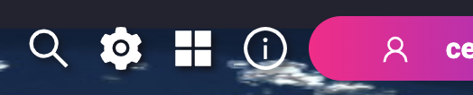
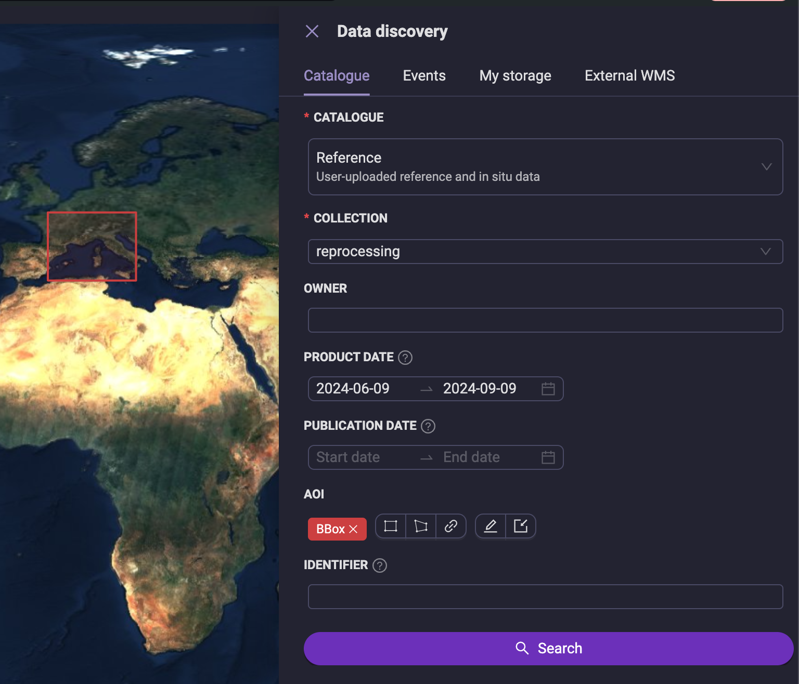
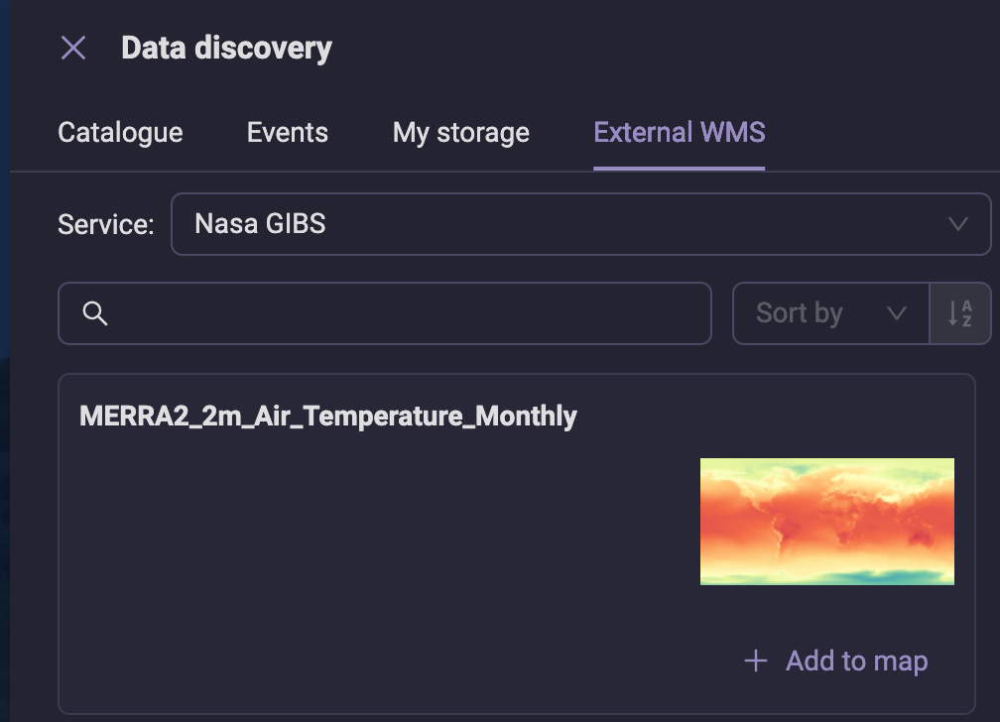

Data discovery
You can activate the Data discovery by just clicking the magnifier lens icon in the top right bar:
{kind=link}
After clicking on it, it opens a panel on the right side, with the following entries:
Catalog, to access the catalog(s) of products available.
Events, to access products produced by the Event Processing.
My storage, to access products organized in My Bookmarks, Processing outputs, and Uploaded data.
External WMS, to access data served my external services exposing a Web Map Service (WMS) interface, such as for example the NASA GIBS.
{kind=link}
Catalog
Catalog provides access to the following groups of collections:
Open Data, containing open data collections. Note that this group might not be available for all the :ref:`insula_instances`.
Commercial Data, containing open data collections. Note that this group might not be available for all the :ref:`insula_instances`.
- Reference, containing reference and in situ data uploaded by users on Insula Awareness or Insula Perception
Both Insula Awareness and Insula Perception allow users to upload products. For more information, see Uploaded data (Awareness) and My storage (Perception).
Reference data is also referred as Uploaded data, but it has the same meaning.
Output products, containing outputs of services generated on Insula Intellect.
Some Instances might contain additional groups of collections.
Reference Data
Reference data provides access to user uploaded data (e.g., in-situ data). These can be searched according to the following criteria:
Collection (required), the collection (or folder) in which the outputs have been grouped.
Owner (optional), the id of the owner of the product.
Product date (optional), the date at which the data is valid, e.g. the measurement data for an in situ measurement.
Publication date (optional), the date when this data was uploaded.
Area of Interest (AOI) (optional), this can be drawn directly on the geobrowser (as box or polygon), or using a previously saved area, or by importing a shapefile.
Identifier (optional), a string identifying the product.
Note that only data which have been made visible (i.e., shared) by their owner will appear in the search results.
{kind=link}
Output Products
Insula Intellect produces the products in this group. They can be filtered for according to the same criteria as the Reference Data.
Note that only data which have been made visible (i.e., shared) by their owner will appear in the search results.
Events
Events provides access to products produced by the Event Processing. Stay tuned, more information will come on this topic!
My storage
My storage in Insula Perception provides a quick access to your storage, with the following storage types:
My Bookmarks. For more information, see My Bookmarks.
Processing outputs. For more information, see also Processing outputs.
Uploaded data. For more information, see also Uploaded data.
Some features, like uploading, downloading or removing data are available in Insula Perception.
For the other features related to your storage, and further details for each storage type, please refer to Insula Awareness.
TIP: My storage in Insula Perception allow to visualise the content of your storage in the map. For more details, see Data visualisation and analytics.
External WMS
External is a way to access external data through Catalog exposing the WMS interface. Currently, it is supported the NASA GIBS.
More information about how to leverage External WMS is available in Data visualisation and analytics.
{kind=link}